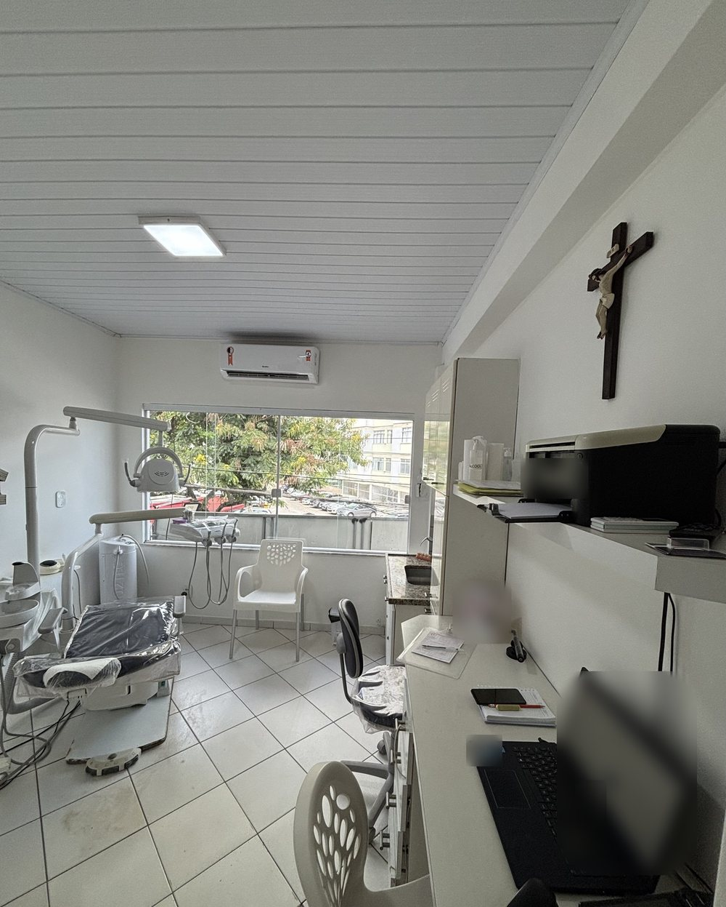

Início · O consultório
O consultório: sala 102, na Pituba.
Cadeiras rosa-claro, um lustre de anéis dourados, a parede com o logotipo e uma sala de atendimento com janela para as árvores. “Fui muito bem atendida”, escreveu uma paciente sobre o consultório.
Logo na entrada
A recepção


A recepção, o corredor e a parede do logotipo. Fotos publicadas pelo consultório na ficha do Google.
“Atendimento da mais alta qualidade técnica, acolhedor, humano e com estrutura física confortável!”Roberta M., avaliação no Google · ver na ficha
Atendimento
A sala de atendimento

A cadeira odontológica junto à janela, com luz natural, e a bancada de trabalho ao lado.
“Ambiente muito organizado, os profissionais bastante dedicados. Super indico.”Rosemeire B., avaliação no Google
Atendimento
Horário
Atendimento com hora marcada
Horário da ficha do consultório no Google, que recomenda marcar hora. Atendimento com hora marcada — confirme com a equipe pelo WhatsApp.
Endereço
Como chegar
- Endereço: Alameda Florença, 93, sala 102, Parque Júlio César, Pituba, Salvador – BA, 41830-460.
- WhatsApp: (71) 99238-9399.
- Atendimento: com hora marcada; a Doctoralia informa atendimento particular — confirme com a equipe.
Rota
Mapa
Dúvidas frequentes
Perguntas comuns
Atende aos sábados?
Pela ficha do consultório no Google, não: o atendimento é de segunda a sexta, das 8h30 às 17h.
Preciso marcar hora?
Sim, a ficha recomenda marcar hora. O agendamento é pelo WhatsApp do consultório.
O consultório fica na Pituba ou no Itaigara?
O endereço oficial — Google, Receita Federal e CRO-BA — é Alameda Florença, 93, sala 102, Parque Júlio César, Pituba.
Agende
Comece por uma avaliação, com hora marcada.
Consultório na Alameda Florença, 93, sala 102, Pituba. A equipe combina dia e horário pelo WhatsApp (71) 99238-9399.